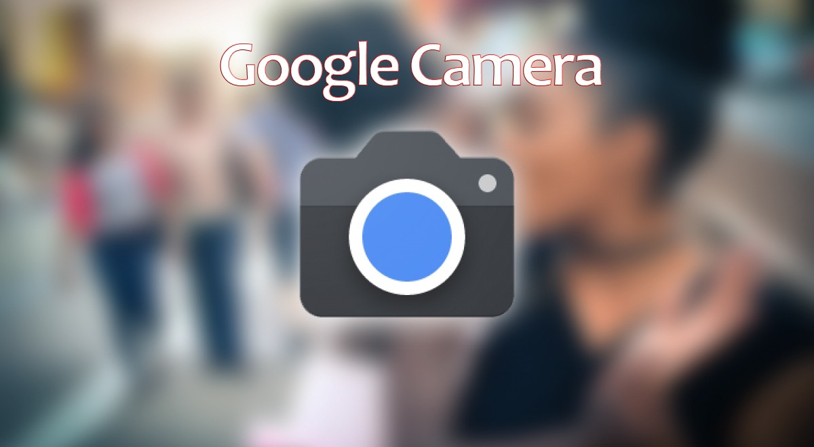
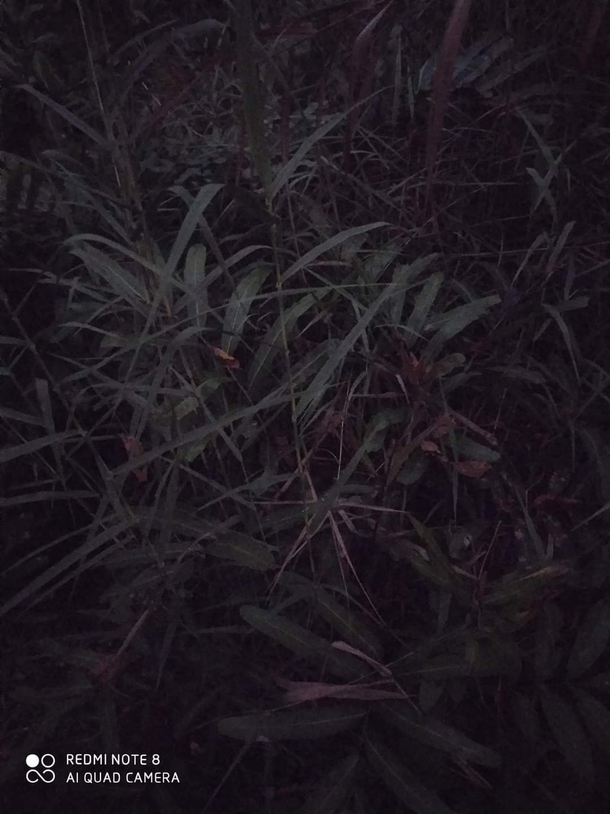
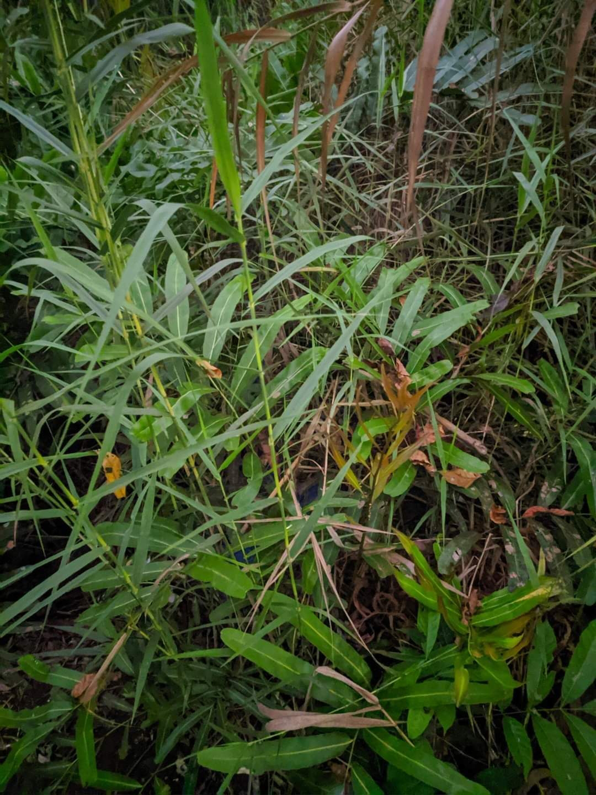
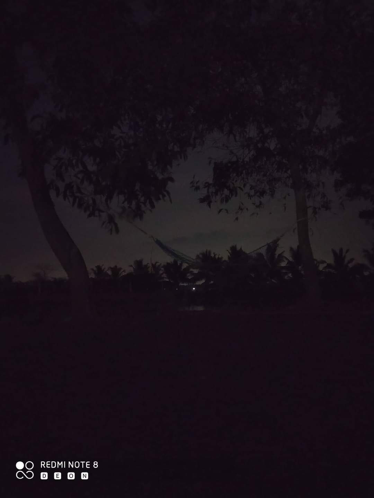
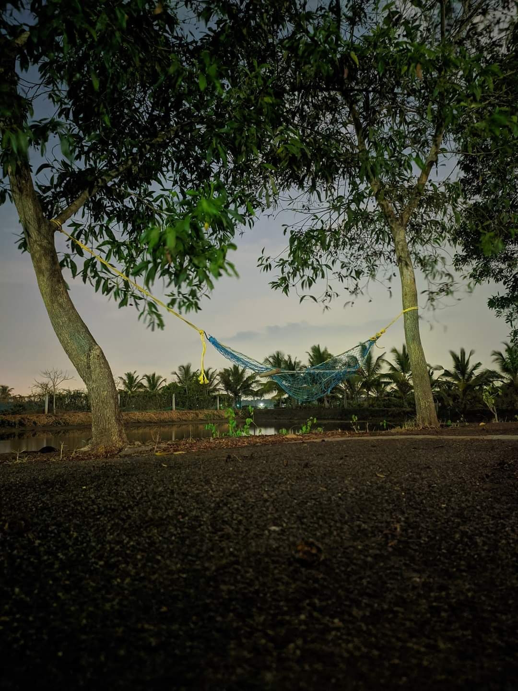

ഗൂഗിളിന്റെ അഡ്വാൻഡ്സ് ആയിട്ടുള്ള ക്യാമറ ആപ്ലിക്കേഷനാണ് ഗൂഗിൾ ക്യാമറ.
പിക്സൽ ഫോണുകളിലാണ് ഇത് inbuilt ആയി ലഭിക്കുക. എന്നിരുന്നാലും സപ്പോർട്ട് ചെയ്യുന്ന മറ്റു ഫോണുകളിൽ Gcam ന്റെ MODDED വേർഷനുകൾ ഇൻസ്റ്റാൾ ചെയ്ത് ഉപയോഗിക്കാവുന്നതാണ്.
ഫോണിലെ സാധാരണ ക്യാമറ app ൽ എടുക്കുന്നതിനെക്കാൾ വളരെയധികം ഗുണമേന്മയുള്ള ചിത്രങ്ങളാണ് Gcam ലൂടെ ലഭിക്കുന്നത്. കൂടാതെ, Night mode, HDR+, Astrophotography, 360°, Ultra wide angle മുതലായ ഫീച്ചറുകളും ഗൂഗിൾ ക്യാമറയിൽ ലഭ്യമാണ്.
എങ്ങനെയാണ് Gcam ഇൻസ്റ്റാൾ ചെയ്യുന്നത്?
പ്ലേ സ്റ്റോറിൽ നിന്നും നേരിട്ട് Gcam ഇൻസ്റ്റാൾ ചെയ്യാൻ സാധിക്കില്ല. MOD (modify) ചെയ്ത വേർഷനുകളാണ് ഉപയോഗിക്കാൻ കഴിയുന്നത്.
1. ആദ്യമായി നമ്മുടെ ഫോണിൽ Gcam സപ്പോർട്ട് ചെയ്യുമോ എന്ന് അറിയണം. അതിനായി പ്ലേ സ്റ്റോറിൽ നിന്നും Camera 2 api probe എന്ന ആപ്പ് ഇൻസ്റ്റാൾ ചെയ്ത് open ചെയ്യുക. അതിലെ Hardware support level എന്നുള്ളത് Full എന്നോ Level 3 എന്നോ ആണെങ്കിൽ നിങ്ങളുടെ ഫോണിൽ Gcam ഉപയോഗിക്കാവുന്നതാണ്.
2. ഓരോ ഫോണിനും അതിന്റേതായ MODED version of Gcam ഉണ്ട്. അതുകൊണ്ടു തന്നെ ഗൂഗിളിൽ സെർച്ച് ചെയ്ത് എടുക്കുക എന്നതാണ് ഏറ്റവും ഉചിതം. അതായത് Redmi Note 8 ന് "Google camera for redmi note 8 apk" എന്ന് സെർച്ച് ചെയ്യുക.
ആവശ്യമെങ്കിൽ YouTube വിഡിയോസും refer ചെയ്യാവുന്നതാണ്.
(അല്ലെങ്കിൽ അല്ലെങ്കിൽ പ്ലേസ്റ്റോറിൽ നിന്നും Gcamator എന്ന ആപ്പ് ഇൻസ്റ്റാൾ ചെയ്താൽ മതി.. ഫോണിന് പറ്റിയ ഗൂഗിൾ ക്യാമറ ലഭ്യമാണെങ്കിൽ അതിൽ കാണിക്കും.)
PS: ഞാൻ (പോസ്റ്റ് ഇട്ടപ്പോൾ) ഉപയോഗിക്കുന്നത് (Redmi Note 8) HyperCam 7.2 എന്ന MOD ആണ്. ഇത് Redmi Note 7, Note 7 Pro എന്നീ ഫോണുകളിലും സപ്പോർട്ട് ചെയ്യും.
NB: Mediatek പ്രോസസ്സർ ആയതിനാൽ Redmi Note 8 Pro ൽ Hypercam, Parrot തുടങ്ങിയ Gcams ഉപയോഗിക്കാൻ കഴിയില്ല. മിക്ക ഡെവലപ്പർസും snapdragon ബേസ് ചെയ്ത് ആയതിനാലാണിത്.
-DeOn-


No flash, no other light sources

No flash, no other light sources

No flash, no other light sources